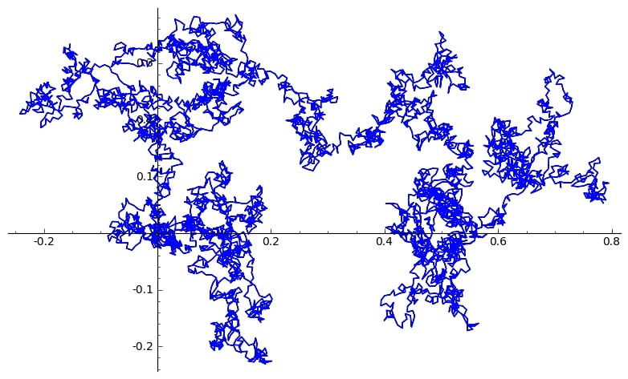

About Me
I am currently a Postdoctoral Research Fellow in the Climate Systems research group at the University of Exeter, working with Prof Pierre Friedlingstein. I am currently contracted to work with the Met Office, assessing bioenergy mitigation. I am also the module leader and lecturer for the Exploring Mathematics module at the University.
I completed my PhD at Bristol University in 2022, supervised by Dr Jonathan Bober in Number Theory, and did my undergraduate MMath degree at Grey College, Durham University. In my spare time, I play netball in a local team and compete in triathlons.
Publications (Climate Research)
Global comparison of temporal dynamics of C storage efficiency between A/R and BECCS on global existing agricultural lands (Nutzel, T. et al) (2024+): Work in Progress
SPRUCE-MIP: Model Intercomparison of Northern Peatland Carbon Cycle Over the SPRUCE Site (Shi, X. et al) [Abstract submitted to AGU 2023]
Publications (Number Theory)
The Limiting Distribution of Legendre paths (Hussain, A. and Lamzouri, Y.) [Accepted at Journal de l'Ecole polytechnique]
Limiting Distributions of Character Sums (Hussain, A.) International Mathematics Research Notices (2022)
